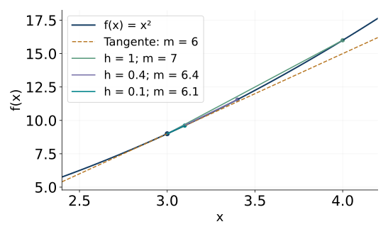
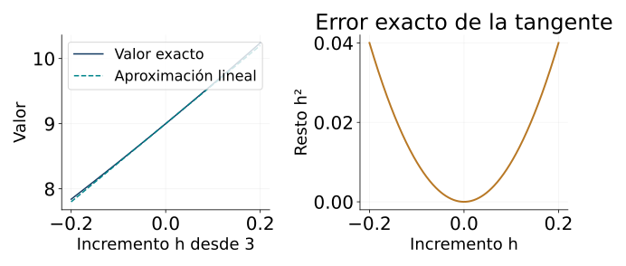
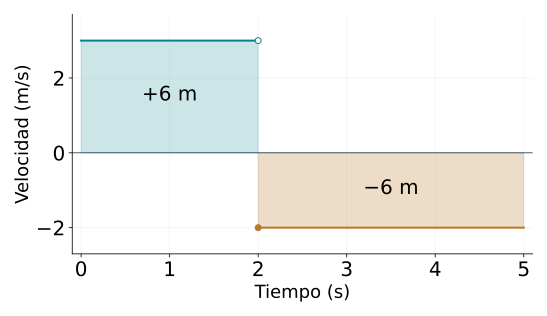
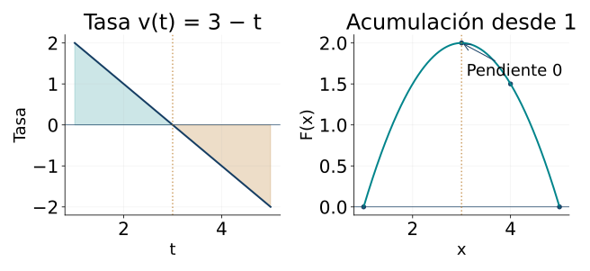

Variación, acumulación y umbral del cálculo
← Probabilidad, condiciones y distribuciones elementales · Índice del libro · Siguiente →
Un vehículo ocupa posiciones distintas a lo largo del tiempo. Si conocemos dos de ellas, podemos calcular cuánto cambió su posición y repartir ese cambio entre los segundos transcurridos. Un registro más fino permite repetir la cuenta en intervalos cada vez menores. Surge una pregunta precisa: ¿se aproximan esas tasas a un valor determinado? Otra pregunta recorre el camino inverso. Si conocemos la velocidad durante un recorrido, ¿cómo recuperamos el desplazamiento?
Las dos preguntas organizan este capítulo. La derivada estudia el cambio local mediante límites de cocientes. La integral reúne contribuciones pequeñas para obtener una acumulación. En ejemplos polinómicos, ambas operaciones pueden justificarse con herramientas que ya conocemos: identidades algebraicas, desigualdades, sumas y completitud de los reales. El trabajo de los límites consiste en controlar todas las aproximaciones suficientemente cercanas; ese control permitirá pasar de una exploración numérica a una afirmación demostrada.
Repartir un cambio entre dos instantes
Para una función f definida en a y b, con \(a<b\), el incremento es \(f(b)-f(a)\) y la tasa media en ese intervalo es
\[\frac{f(b)-f(a)}{b-a}.\]
El denominador mide la longitud del intervalo. Si f expresa una posición en metros y su argumento es tiempo en segundos, la tasa tiene unidades de metros por segundo. En el gráfico es la pendiente de la secante que une los puntos \((a,f(a))\) y \((b,f(b))\).
Al reunir intervalos, se suman los incrementos y las duraciones. Por eso la tasa conjunta es una media ponderada de las tasas de cada tramo, con las duraciones como pesos. Si una posición aumenta durante una parte del recorrido y disminuye durante otra, los incrementos conservan sus signos. La distancia recorrida suma las longitudes de los movimientos; el desplazamiento conserva el efecto conjunto de sus orientaciones.
Propiedades de incrementos y tasas
| Propiedad | Hipótesis y alcance |
|---|---|
| Incremento aditivo | Para a, b y c del dominio, \(f(c)-f(a)=[f(b)-f(a)]+[f(c)-f(b)]\). |
| Tasa y unidades | Para \(a<b\), la tasa media es \([f(b)-f(a)]/(b-a)\) y sus unidades son las de f divididas por las del argumento. |
| Reunión de intervalos | Si \(a<b<c\) y las tasas son \(m_1,m_2\), la tasa conjunta es \([(b-a)m_1+(c-b)m_2]/(c-a)\). |
| Secante | La recta que pasa por \((a,f(a))\) y \((b,f(b))\), \(a\ne b\), tiene pendiente \([f(b)-f(a)]/(b-a)\). |
Pruebas. Véase «Incrementos, tasas y unidades» en el apéndice de demostraciones.
Problema 1. Una tasa con unidades
La posición de un móvil es \(s(t)=t^2-2t\), con t en segundos y s en metros. Hallar el desplazamiento y la velocidad media entre t=1 y t=4.
Solución. \(s(1)=-1\) y \(s(4)=8\). El desplazamiento es \(8-(-1)=9\) metros en tres segundos. La velocidad media vale \(9/3=3\) metros por segundo. Las dos cantidades responden a preguntas diferentes: el incremento mide el cambio de posición y su cociente con la duración mide el cambio por unidad de tiempo.
Problema 2. Conservar el sentido de cada tramo
Un móvil avanza a 2 metros por segundo durante tres segundos y retrocede a 1 metro por segundo durante los dos siguientes. Hallar desplazamiento, distancia, velocidad media y rapidez media en los cinco segundos.
Solución. Elegimos como sentido positivo el avance. Los desplazamientos son \(2\cdot3=6\) y \((-1)\cdot2=-2\) metros. Su suma es 4 metros y la distancia es \(6+2=8\) metros. La velocidad media es \(4/5\) metros por segundo; la rapidez media, \(8/5\) metros por segundo. La velocidad de cada tramo es constante y las duraciones convierten las tasas en contribuciones al recorrido.
Problema 3. Dos intervalos de duración diferente
Una cantidad cambia a tasa constante 2 durante una unidad de tiempo y a tasa constante 4 durante las tres siguientes. Hallar la tasa media del intervalo completo.
Solución. El cambio total es \(2\cdot1+4\cdot3=14\) y la duración es cuatro. La tasa conjunta vale \(14/4=7/2\). La media de las dos tasas con pesos iguales sería 3; los pesos adecuados son las duraciones 1 y 3. También se obtiene \((1/4)2+(3/4)4=7/2\).
Acercarse con un control explícito
Para estudiar la tasa cerca de un punto a, escribimos el segundo argumento como a+h. El cociente incremental es
\[q(h)=\frac{f(a+h)-f(a)}h,\qquad h\ne0.\]
La identidad \(f(a+h)-f(a)=hq(h)\) reúne cambio y tasa. El valor h=0 corresponde al punto de llegada del proceso. Las cuentas se hacen con incrementos distintos de cero y se estudia qué ocurre al aproximarlos a cero por ambos lados.
Escribimos \(q(h)\to L\) cuando podemos hacer que el error \(|q(h)-L|\) sea menor que cualquier tolerancia positiva fijada, tomando incrementos suficientemente próximos a cero. En símbolos, para cada \(\varepsilon>0\) debe existir \(\delta>0\) tal que \(0<|h|<\delta\) implique \(|q(h)-L|<\varepsilon\) dentro del dominio considerado. La tolerancia se elige primero; después buscamos una distancia que sirva para todos los incrementos admisibles que la cumplen. Esa dependencia entre \(\varepsilon\) y \(\delta\) será lo que construyamos al demostrar un límite.
La misma definición se usa para \(f(x)\to L\) cuando x se acerca a a, sustituyendo h por x-a. Una función es continua en a cuando \(f(x)\to f(a)\) al acercarse a a dentro de su dominio. En un intervalo cerrado se usa el acercamiento disponible en cada extremo. Los límites de sumas, productos y cocientes permiten demostrar la continuidad de los polinomios y tratar cocientes donde el límite del denominador es distinto de cero.
Propiedades de límites y continuidad
| Propiedad | Hipótesis y alcance |
|---|---|
| Control de un límite | \(q(h)\to L\) exige: para cada \(\varepsilon>0\) existe \(\delta>0\) con \(0<\lvert h\rvert <\delta\Rightarrow\lvert q(h)-L\rvert <\varepsilon\), en el dominio. |
| Unicidad | En un punto de acumulación del dominio, un límite finito tiene un único valor. |
| Combinación lineal | Si \(u\to L\) y \(v\to M\), entonces \(\alpha u+\beta v\to\alpha L+\beta M\) para constantes reales. |
| Producto | Si \(u\to L\) y \(v\to M\), entonces \(uv\to LM\). Una función con límite finito queda acotada cerca del punto. |
| Cociente | Si \(u\to L\), \(v\to M\) y \(M\ne0\), entonces \(u/v\to L/M\); v queda separado de cero cerca del punto. |
| Continuidad polinómica | Todo polinomio real es continuo en cada punto real. La continuidad en a exige que el límite coincida con el valor f(a). |
Pruebas. Véase «Límites, continuidad y operaciones» en el apéndice de demostraciones.
Problema 4. El cociente de un cuadrado
Para \(f(x)=x^2\), hallar el cociente incremental en a=3 y demostrar que su límite es 6.
Solución. Para \(h\ne0\),
\[\frac{(3+h)^2-9}{h}=\frac{6h+h^2}{h}=6+h.\]
La diferencia respecto de 6 es \(|h|\). Dada cualquier tolerancia \(\varepsilon>0\), tomar \(\delta=\varepsilon\) asegura que \(0<|h|<\delta\) implica \(|q(h)-6|<\varepsilon\). La simplificación es válida para cada incremento permitido y el control establece el límite.
Problema 5. Una cota para el cubo
Para \(f(x)=x^3\), estudiar el cociente incremental en a=2 y justificar su límite con una cota.
Solución. La expansión da \(q(h)=12+6h+h^2\) para \(h\ne0\). Si \(|h|<1\), entonces \(|q(h)-12|\leq6|h|+|h|^2\leq7|h|\). Para una tolerancia \(\varepsilon>0\) sirve \(\delta=\min(1,\varepsilon/7)\). Todo incremento con \(0<|h|<\delta\) produce error menor que \(\varepsilon\). Así se obtiene el límite 12 por una desigualdad que abarca incrementos positivos y negativos.
Problema 6. Un valor aislado y un límite
Sea \(f(x)=(x^2-4)/(x-2)\) para \(x\ne2\), y sea f(2)=7. Hallar el límite al acercarse a 2 y estudiar la continuidad en ese punto.
Solución. Para \(x\ne2\) se tiene \(f(x)=x+2\). Por tanto \(|f(x)-4|=|x-2|\) y el límite es 4. El valor asignado en el punto es 7, de modo que la función presenta una discontinuidad en 2. Asignar allí el valor 4 produciría la extensión continua. El límite queda determinado por los valores cercanos y la continuidad relaciona ese límite con el valor elegido en el punto.
La derivada de una función
La derivada de f en un punto interior a es el límite finito de su cociente incremental, cuando ese límite existe, y se escribe \(f'(a)\). Su valor expresa la tasa local y determina la pendiente de la tangente. Los problemas 4 y 5 muestran dos casos: el cuadrado tiene derivada 6 en 3 y el cubo tiene derivada 12 en 2.

Para el cuadrado en un punto real cualquiera \(a\), la misma expansión da \(q(h)=2a+h\), cuyo límite es \(2a\). Podemos seguir el mecanismo en \(x^n\), con \(n\) entero positivo: al desarrollar \((a+h)^n\), el término \(a^n\) se cancela al restar el valor inicial; todos los restantes contienen \(h\) y permiten dividir por el incremento no nulo. Queda \(na^{n-1}\) más términos con potencias positivas de \(h\). Las reglas de límites hacen que estos últimos tiendan a cero, y obtenemos así la regla de la potencia. Combinar un número finito de esas identidades permite derivar un polinomio término a término.
La existencia de la derivada también asegura continuidad: la identidad \(f(a+h)-f(a)=hq(h)\) muestra que el cambio tiende a cero cuando q tiene límite finito. La continuidad permite que las tasas cercanas se estudien sobre una función cuyos valores se aproximan al del punto. La existencia de una tasa local añade una condición específica sobre el cociente.
Propiedades de la derivación polinómica
| Propiedad | Hipótesis y alcance |
|---|---|
| Derivada en un punto | Para a interior del dominio, \(f'(a)=\lim_{h\to0}[f(a+h)-f(a)]/h\), si existe como número real. |
| Constante | La derivada de \(f(x)=c\) es cero en cada punto real. |
| Función afín | La derivada de \(f(x)=mx+b\) es m en cada punto real. |
| Potencia entera | Para n entero positivo, \((x^n)'=nx^{n-1}\) en todos los reales; el caso constante se trata aparte. |
| Combinación lineal | Si f y g son derivables en a, \((\alpha f+\beta g)'(a)=\alpha f'(a)+\beta g'(a)\). |
| Continuidad | Si f es derivable en a, entonces es continua en a. |
Pruebas. Véase «Cocientes incrementales y derivadas de polinomios» en el apéndice de demostraciones.
Problema 7. Dos pendientes al acercarse a una punta
Estudiar la derivabilidad de \(f(x)=|x|\) en cero.
Solución. El cociente es \(|h|/h\). Para h positivo vale 1 y para h negativo vale -1. Si hubiera un límite bilateral L, los valores constantes de cada lado tendrían que aproximarse a ese mismo L; exigirían simultáneamente L=1 y L=-1. La función es continua en cero, pues \(||h|-0|=|h|\to0\), y tiene dos pendientes laterales diferentes. La punta del gráfico refleja esa diferencia.
Problema 8. Una tabla y dos funciones compatibles
Se observan las tasas \(q(h)=2+h\) en los incrementos \(h_1=1\), \(h_2=1/10\) y \(h_3=1/100\). Examinar si esos tres valores determinan el límite. Comparar los polinomios
\[f(x)=2x+x^2,\qquad g(x)=2x+x^2+x\prod_{j=1}^3(1-x/h_j)^2.\]
Solución. Ambos polinomios valen cero en cero y coinciden en cada \(h_j\), porque allí uno de los factores del producto se anula. Sus cocientes incrementales en cero son \(2+h\) y \(2+h+\prod_j(1-h/h_j)^2\). En los tres incrementos observados coinciden exactamente. Al acercarse h a cero, cada factor del producto tiende a uno, así que los límites son 2 y 3, respectivamente. Las tres observaciones admiten estas dos continuaciones polinómicas. Una fórmula acompañada de un control de límite aporta información sobre todos los incrementos cercanos.
Problema 9. Derivar y evaluar un polinomio
Hallar la derivada de \(f(x)=3x^4-2x^2+5x-7\) y su valor en x=1.
Solución. Potencias y combinación lineal dan \(f'(x)=12x^3-4x+5\). En x=1 resulta \(12-4+5=13\). Cada término procede de un límite justificado para una potencia entera, y el dominio del polinomio y de su derivada es todo el conjunto de los reales.
Problema 10. Una expresión que puede desarrollarse
Derivar \(f(x)=(x-1)^2\) usando las reglas justificadas hasta aquí.
Solución. La identidad polinómica \(f(x)=x^2-2x+1\) vale para todo x real. Derivarla término a término da \(f'(x)=2x-2\). También puede comprobarse directamente: el cociente incremental en a es \(2(a-1)+h\), cuyo límite es \(2a-2\). Los dos procedimientos conservan el mismo dominio y obtienen la misma función derivada.
Problema 11. Velocidad de un modelo de posición
Una posición en metros viene dada por \(s(t)=5+2t+t^2\), con t en segundos. Hallar la velocidad en t=3 y la velocidad media entre 3 y 3+h, para \(h\ne0\).
Solución. La función derivada es \(s'(t)=2+2t\), por lo que \(s'(3)=8\) metros por segundo. La tasa media del intervalo escrito es \([s(3+h)-s(3)]/h=8+h\), con las unidades correspondientes al expresar h en segundos. El valor 8 se obtiene al hacer tender h a cero. En una aplicación, la fórmula de posición y el intervalo físico donde se usa forman parte del modelo.
Aproximar cerca de un punto y localizar extremos
Si f tiene derivada en a, podemos escribir
\[f(a+h)=f(a)+f'(a)h+r(h),\qquad \frac{r(h)}h\longrightarrow0.\]
La recta \(f(a)+f'(a)h\) describe la parte de primer orden del cambio. El resto precisa la calidad de la aproximación. Para un polinomio podemos conservarlo de forma exacta y acotarlo, como hicimos con los cocientes incrementales.

La derivada también permite localizar candidatos a extremos. En un máximo interior, los cocientes con incrementos positivos tienen signo no positivo y los de incrementos negativos tienen signo no negativo. Si ambos lados llegan a un límite común, ese límite es cero. Un mínimo interior produce la misma conclusión. Los extremos de un intervalo cerrado requieren además revisar sus fronteras.
Para relacionar una derivada con un cambio sobre un intervalo usaremos el teorema del valor medio: si f es continua en \([a,b]\), con \(a<b\), y derivable en \((a,b)\), existe \(c\in(a,b)\) tal que \(f(b)-f(a)=f'(c)(b-a)\). Su prueba se apoya en la existencia de extremos de una función continua en un intervalo cerrado y en la condición de derivada cero para un extremo interior. El apéndice demuestra esos pasos desde la completitud de los reales. Una consecuencia útil es que una cota \(|f'|\leq L\) controla todos los cambios mediante \(|f(t)-f(s)|\leq L|t-s|\).
Propiedades de aproximación y extremos
| Propiedad | Hipótesis y alcance |
|---|---|
| Aproximación local | Si f es derivable en a, \(f(a+h)=f(a)+f'(a)h+r(h)\) con \(r(h)/h\to0\). |
| Extremo interior | Si f es derivable en un punto interior donde tiene un máximo o mínimo local, su derivada allí es cero. |
| Valor medio | Si f es continua en \([a,b]\), \(a<b\), y derivable en \((a,b)\), existe c interior con \(f(b)-f(a)=f'(c)(b-a)\). |
| Cota del cambio | Bajo esas condiciones, si \(\lvert f'(x)\rvert \leq L\) en el interior, entonces $f(t)-f(s)Lt-s$ para s y t del intervalo. |
Pruebas. Véase «Aproximación local, extremos y valor medio» en el apéndice de demostraciones.
Problema 12. Una tangente y un error exacto
Aproximar \((3{,}02)^2\) mediante la tangente de \(x^2\) en 3 y calcular el error.
Solución. El incremento es \(h=1/50\). La aproximación lineal vale \(9+6/50=9{,}12\). La identidad \((3+h)^2=9+6h+h^2\) conserva el resto \(h^2=1/2500=0{,}0004\). El valor exacto es \(9{,}1204\). La tangente proporciona la aproximación y el término cuadrático determina su error y su signo.
Problema 13. Conservar el resto de un cubo
Aproximar \((2{,}1)^3\) linealmente alrededor de 2 y calcular la diferencia exacta.
Solución. Como la derivada del cubo en 2 es 12, la aproximación es \(8+12(1/10)=9{,}2\). La identidad \((2+h)^3=8+12h+6h^2+h^3\) da resto \(6/100+1/1000=61/1000\). Por tanto, el valor exacto es \(9{,}261\) y la aproximación queda por debajo en \(0{,}061\). Conocer el resto permite decidir cuántas cifras sostiene esta aproximación concreta.
Problema 14. Un máximo con comprobación algebraica
Un rectángulo tiene perímetro 20 unidades. Usando una longitud x, hallar el área máxima y comprobar el candidato obtenido por derivación.
Solución. La otra longitud es \(10-x\), con \(0<x<10\) para rectángulos de lados positivos. El área es \(A(x)=10x-x^2\) y su derivada \(10-2x\) se anula en x=5. La identidad \(A(x)=25-(x-5)^2\) demuestra que el área es como máximo 25 y que ese valor se alcanza en x=5. Los lados son 5 y 5. La condición de derivada cero localiza el candidato y la identidad verifica la comparación con todos los rectángulos admisibles.
Problema 15. Un punto de derivada cero
Para \(f(x)=x^3\), estudiar x=0 como candidato a extremo.
Solución. La derivada \(3x^2\) vale cero en el origen. Para todo \(\eta>0\), los puntos \(-\eta\) y \(\eta\) dan \(-\eta^3<0<\eta^3\). Así, alrededor de cero aparecen valores a ambos lados de f(0). El punto es estacionario y la función atraviesa su nivel. Este ejemplo establece el alcance de la condición necesaria de extremo interior.
Problema 16. Un intervalo que termina antes del vértice
Hallar el máximo de \(f(x)=10-(x-4)^2\) en \([0,3]\).
Solución. La derivada es \(8-2x\) y es positiva en todo el intervalo. El teorema del valor medio asegura que f crece: para \(s<t\), el cambio es \(f'(c)(t-s)>0\). El mayor valor está en la frontera x=3 y vale 9. El único cero de la derivada es 4, situado fuera del intervalo permitido. La búsqueda conserva las restricciones desde el inicio.
Acumular contribuciones de una tasa
Cuando una tasa es constante e igual a v durante un intervalo de longitud \(\Delta t\), su contribución es \(v\Delta t\). Para una tasa constante por tramos, la acumulación es la suma de esas contribuciones. Las partes de signo negativo se conservan al calcular un cambio orientado. En un movimiento, integrar el valor absoluto de la velocidad suma las distancias de los tramos.

Una partición \(a=x_0<x_1<\cdots<x_n=b\) divide un intervalo en piezas. Si una tasa v varía dentro de una pieza, una cota inferior \(m_i\) y una superior \(M_i\) producen contribuciones que encierran su acumulación. Al sumar se obtienen las sumas inferior \(\sum_i m_i\Delta x_i\) y superior \(\sum_i M_i\Delta x_i\). Para una función acotada, la integral de Darboux existe cuando el supremo de todas las sumas inferiores coincide con el ínfimo de las superiores. Ese valor común se escribe \(\int_a^b v(t)\,dt\).
Para controlar la separación entre las sumas, buscaremos una cota sobre cuánto puede variar la tasa dentro de cada pieza. Supondremos que existe \(L\geq0\) tal que \(|v(t)-v(s)|\leq L|t-s|\) en el intervalo; una función con esta propiedad se llama Lipschitz allí. En una pieza de ancho \(\Delta x_i\), cualquier diferencia entre sus alturas es como máximo \(L\Delta x_i\). Al multiplicar esa oscilación por el ancho, la diferencia entre las contribuciones superior e inferior queda acotada por \(L(\Delta x_i)^2\). Si \(h\) es el mayor ancho de la partición, cada cuadrado es a lo sumo \(h\Delta x_i\); al sumar obtenemos \(L(b-a)h\). El apéndice demuestra que las sumas encierran un único valor y que cualquier elección de una altura por pieza aproxima ese valor con error como máximo \(L(b-a)h\).
Las tasas constantes y lineales cumplen esa condición. También la cumplen los polinomios sobre cualquier intervalo cerrado, porque su derivada continua queda acotada y se aplica la cota del cambio. Esto da una clase amplia de ejemplos donde la acumulación puede construirse y controlarse.
Propiedades de particiones y acumulación
| Propiedad | Hipótesis y alcance |
|---|---|
| Tasa por tramos | Si v es constante \(v_i\) en cada pieza, su acumulación es \(\sum_i v_i\Delta x_i\), con signos y unidades conservados. |
| Refinamiento | Añadir puntos a una partición aumenta o conserva su suma inferior y disminuye o conserva la superior. |
| Integral de Darboux | Para v acotada en \([a,b]\), es el valor común de supremos inferiores e ínfimos superiores, cuando coinciden. |
| Operaciones | Para funciones integrables, la integral es lineal, aditiva sobre intervalos contiguos y conserva el orden de funciones en un intervalo con a<b. |
| Control Lipschitz | Si $v(t)-v(s)Lt-s$, v es integrable y una suma con malla h tiene error a lo sumo \(L(b-a)h\). |
Pruebas. Véase «Particiones, áreas orientadas e integrabilidad» en el apéndice de demostraciones.
Problema 17. Un regreso al punto de partida
Una velocidad vale 3 metros por segundo en \([0,2)\) y -2 metros por segundo en \([2,5]\), con tiempos en segundos. Hallar desplazamiento y distancia, y describir la acumulación desde cero.
Solución. Las contribuciones son 6 y -6 metros, por lo que el desplazamiento es cero y la distancia es 12 metros. La acumulación S(t) vale 3t para \(0\leq t\leq2\) y \(6-2(t-2)=10-2t\) para \(2\leq t\leq5\). Ambas expresiones dan 6 en t=2 y la segunda da cero en t=5. El regreso reúne dos movimientos de magnitudes iguales y sentidos opuestos.
Problema 18. Encerrar una acumulación con rectángulos
Para \(v(t)=t\) en \([0,2]\), usar n piezas iguales y hallar sumas inferiores y superiores. Deducir la integral y un número de piezas que asegure error a lo sumo \(1/100\) al usar la suma inferior.
Solución. Los anchos son \(2/n\). Como v crece, las alturas inferiores son \(2j/n\), con \(j=0,\ldots,n-1\). Su suma ponderada es
\[L_n=\frac4{n^2}\frac{n(n-1)}2=2-\frac2n.\]
Las alturas superiores dan \(U_n=2+2/n\). Todo valor encerrado entre ambas tiende a 2 al crecer n, y el criterio de Darboux establece \(\int_0^2t\,dt=2\). El error de \(L_n\) es exactamente \(2/n\), así que \(n\geq200\) asegura el margen pedido. La unidad del resultado es la de la tasa multiplicada por la del argumento.
Problema 19. Una recta que cambia de signo
Una velocidad es \(v(t)=4-2t\) en \([0,3]\), con unidades de metros y segundos. Hallar desplazamiento y distancia mediante áreas.
Solución. La velocidad se anula en t=2. Entre 0 y 2, el triángulo sobre el eje tiene base 2 y altura 4, con área 4. Entre 2 y 3, el triángulo bajo el eje tiene base 1 y altura 2, con área orientada -1. El desplazamiento es \(4-1=3\) metros y la distancia es \(4+1=5\) metros. Las áreas triangulares coinciden con los límites de las sumas para una función lineal, como se demuestra en el apéndice.
Problema 20. Alturas, anchos y acumulación
Una tasa vale \(v(t)=2+t\) en \([0,4]\). Usar las piezas \([0,2]\) y \([2,4]\) para encerrar la acumulación y calcular después su valor exacto.
Solución. Las alturas inferiores son 2 y 4 y los anchos valen 2. La suma inferior es \(2\cdot2+4\cdot2=12\). La superior es \(4\cdot2+6\cdot2=20\). El área del trapecio bajo la recta es \([(2+6)/2]4=16\), situada entre las dos sumas. La multiplicación por los anchos convierte una tasa en una contribución y hace que todas las cantidades comparadas tengan las mismas unidades.
Recuperar una función a partir de su tasa
Una primitiva de v en un intervalo es una función F continua en ese intervalo y derivable en su interior, cuyo valor de derivada es v en cada punto interior. Para una tasa constante k, la función kt es una primitiva. Para una tasa \(\alpha t+\beta\), la derivación del cuadrado muestra que \(\alpha t^2/2+\beta t\) cumple esa condición. Sumar una constante conserva la derivada y permite ajustar un valor inicial.
Si dos primitivas tienen la misma derivada en un intervalo, su diferencia tiene derivada cero. El teorema del valor medio hace que esa diferencia sea constante. Así se describe la familia completa de primitivas y se justifica que un valor inicial seleccione una de ellas. El intervalo común conserva la conexión necesaria para comparar cualesquiera dos puntos.
Propiedades de primitivas y datos iniciales
| Propiedad | Hipótesis y alcance |
|---|---|
| Primitiva | En un intervalo, F es una primitiva de v cuando es continua en el intervalo, derivable en su interior y \(F'=v\) allí. |
| Constante entre primitivas | Dos primitivas de la misma función en un intervalo difieren en una constante. |
| Tasa lineal | Para \(v(t)=\alpha t+\beta\), todas sus primitivas son \(F(t)=\alpha t^2/2+\beta t+C\). |
| Valor inicial | Prescribir \(F(t_0)=y_0\) fija \(C=y_0-\alpha t_0^2/2-\beta t_0\) en esa familia. |
Pruebas. Véase «Primitivas polinómicas y condiciones iniciales» en el apéndice de demostraciones.
Problema 21. Reconstruir una posición
Una velocidad es \(v(t)=2t-3\) y la posición cumple s(1)=4. Hallar s(t) y comprobar ambos datos.
Solución. Las primitivas son \(s(t)=t^2-3t+C\). El dato inicial exige \(1-3+C=4\), por lo que C=6. La función buscada es \(s(t)=t^2-3t+6\). Su derivada es \(2t-3\) y su valor en 1 es 4. La constante fija el nivel de posición compatible con la tasa dada.
La función que acumula y su derivada
Fijemos un punto a y hagamos variar el extremo de la acumulación:
\[F(x)=\int_a^x v(t)\,dt.\]
Para x<a usamos orientación inversa: \(\int_a^x v=-\int_x^a v\). El valor en el propio punto inicial es cero. Si v es Lipschitz en un intervalo cerrado, la diferencia \(F(x+h)-F(x)\) es la acumulación sobre el pequeño intervalo entre x y x+h. Su cociente con h es una tasa media de acumulación. Todas las alturas de ese intervalo difieren de v(x) en a lo sumo \(L|h|\), por lo que el cociente se aproxima a v(x). Se obtiene \(F'(x)=v(x)\) en los puntos interiores.

Esta es una forma elemental del teorema fundamental del cálculo, con una hipótesis que ya permite construir la integral y controlar su límite. Si G es cualquier primitiva de v en el intervalo, la diferencia G-F tiene derivada cero. Por tanto, \(\int_a^b v(t)\,dt=G(b)-G(a)\). Las dos preguntas del inicio quedan conectadas: una acumulación recupera una función a partir de su tasa, y la derivación de esa acumulación devuelve la tasa.
Propiedades de la conexión fundamental
| Propiedad | Hipótesis y alcance |
|---|---|
| Orientación | Para una función integrable, \(\int_a^a v=0\) y \(\int_b^a v=-\int_a^b v\). |
| Derivada de la acumulación | Si v es Lipschitz en \([a,b]\), entonces \(F(x)=\int_a^x v\) cumple \(F'=v\) en \((a,b)\). |
| Evaluación por una primitiva | Si v es Lipschitz y G es una primitiva continua en los extremos del intervalo, \(\int_a^b v=G(b)-G(a)\). |
| Error de una suma | Bajo una cota Lipschitz L, cualquier suma con una altura de v por pieza y malla h difiere de la integral en a lo sumo \(L(b-a)h\). |
Pruebas. Véase «Acumulación y teorema fundamental elemental» en el apéndice de demostraciones.
Problema 22. Derivar una acumulación explícita
Sea \(F(x)=\int_0^x(2t+1)\,dt\). Hallar F(x), F(2) y F’(2), justificando la conexión entre acumulación y tasa.
Solución. Una primitiva es \(G(t)=t^2+t\). La tasa es Lipschitz con L=2 en cualquier intervalo, por lo que \(F(x)=G(x)-G(0)=x^2+x\), con orientación cuando x es negativo. Se obtiene F(2)=6 y F’(2)=5. Derivar la expresión explícita devuelve \(2x+1\), que es la tasa en el extremo variable. La constante inicial F(0)=0 queda incorporada por la resta.
Problema 23. Una integral de un cuadrado
Calcular \(\int_0^2t^2\,dt\) mediante una primitiva justificada y explicar qué hipótesis permite usarla.
Solución. La regla de potencias prueba que \(G(t)=t^3/3\) tiene derivada \(t^2\). En \([0,2]\), la derivada de la tasa t² es 2t y tiene magnitud a lo sumo 4; por el teorema del valor medio, la tasa es Lipschitz con L=4. La conexión fundamental permite evaluar \(G(2)-G(0)=8/3\). La regla usada para derivar la primitiva y la integrabilidad de la tasa quedan justificadas por pasos distintos del argumento.
Problema 24. Un margen para una suma finita
Aproximar \(\int_0^2t^2\,dt\) con veinte rectángulos de alturas tomadas en los extremos izquierdos. Calcular el error exacto, contrastarlo con una cota Lipschitz y hallar un n que garantice error a lo sumo \(1/10\) con esa cota.
Solución. El ancho es \(1/10\) y las alturas son \((j/10)^2\), para \(j=0,\ldots,19\). La suma es \(\sum_{j=0}^{19}j^2/1000=2470/1000=247/100\). Respecto de \(8/3\), el error es \(8/3-247/100=59/300\). Como \(|t^2-s^2|=|t-s||t+s|\leq4|t-s|\) en el intervalo, sirve L=4. La cota general para veinte piezas es \(4\cdot2\cdot(1/10)=4/5\), que cubre el error exacto. Para n piezas iguales la cota es \(16/n\); elegir \(n\geq160\) asegura el margen pedido. La cota garantiza una precisión aun cuando exceda el error que se obtiene en un caso particular.
El rectángulo visto desde el cálculo
Volvamos al rectángulo de veinte metros de perímetro de la introducción. Si uno de sus lados mide \(x\) metros, el otro mide \(10-x\) y el área es \(A(x)=x(10-x)\), con \(0<x<10\). Esta vez la entrada representa una longitud. La derivada \(A'(x)=10-2x\) mide cuánto cambia el área por unidad de cambio de ese lado: es positiva antes de cinco y negativa después. El teorema del valor medio permite concluir que el área crece hasta \(x=5\) y decrece a partir de allí. El cuadrado de cinco metros de lado alcanza el máximo de veinticinco metros cuadrados que el dibujo inicial sugería.
El álgebra ya permitía reconocer ese máximo escribiendo \(A(x)=25-(x-5)^2\). El cálculo añade una lectura mediante la tasa de cambio y su signo a cada lado del máximo. También podemos recorrer el camino inverso: integrar la tasa entre dos longitudes admisibles recupera la diferencia entre sus áreas por el teorema fundamental. La misma figura admite así una comparación global mediante cuadrados y un estudio de sus cambios mediante tasas y acumulaciones.
Ejercicios para trabajar sin profesor
En cada tasa conserve las unidades. Para un límite, presente una identidad y un control válido para todos los incrementos suficientemente pequeños. Al acumular, conserve los anchos, los signos y el intervalo. Si usa una primitiva para evaluar una integral, compruebe su derivada y las hipótesis de la conexión fundamental.
1. Sea \(s(t)=t^2+t\), en metros, con t en segundos. Halle desplazamiento y velocidad media entre 0 y 3 segundos.
2. Un móvil avanza a 3 metros por segundo durante dos segundos y retrocede a 2 metros por segundo durante el siguiente. Halle desplazamiento, distancia, velocidad media y rapidez media.
3. Una tasa vale 1 durante dos unidades de tiempo y 7 durante la siguiente. Halle la tasa media del intervalo completo.
4. Obtenga el cociente incremental de \(x^2\) en a=-2 y demuestre su límite mediante una tolerancia arbitraria.
5. Obtenga el cociente incremental de \(x^3\) en a=-1 y acote su diferencia respecto del límite cuando \(|h|<1\).
6. Sea \(f(x)=(x^2-9)/(x-3)\) para \(x\ne3\), con f(3)=0. Halle el límite en 3 y el valor que produciría una extensión continua.
7. Estudie la derivabilidad de \(f(x)=|x-2|\) en x=2 y su continuidad allí.
8. Sean \(h_1=1/2\), \(h_2=1/20\) y \(h_3=1/200\). Compare los cocientes incrementales en cero de \(f(x)=-4x+x^2\) y \(g(x)=-4x+x^2+2x\prod_{j=1}^3(1-x/h_j)^2\). Estudie sus valores en los tres incrementos y sus límites.
9. Derive \(f(x)=2x^3-x^2+4\) y evalúe su derivada en -1.
10. Derive \((2x+1)^2\) mediante desarrollo polinómico y compruebe el resultado con un cociente incremental.
11. Una posición es \(s(t)=3-t+2t^2\), con unidades de metros y segundos. Halle s’(2) y la tasa media entre 2 y 2+h.
12. Aproxime \((1{,}97)^2\) mediante la tangente del cuadrado en 2 y calcule su error exacto.
13. Aproxime \((1{,}02)^3\) linealmente en 1 y calcule el resto exacto.
14. Un rectángulo de lados positivos tiene perímetro 24 unidades. Localice y compruebe el área máxima.
15. Estudie x=1 para \(f(x)=(x-1)^3\): valor de la derivada y existencia de un extremo local.
16. Halle el máximo de \(f(x)=12-(x-5)^2\) en \([1,4]\).
17. Una velocidad vale 2 en \([0,4)\) y -1 en \([4,6]\), con unidades de metros y segundos. Halle desplazamiento, distancia y acumulación desde cero.
18. Para \(v(t)=2t\) en \([0,3]\), halle las sumas inferiores y superiores con n piezas iguales, la integral y un n que asegure error a lo sumo \(3/100\) al usar la suma inferior.
19. Para \(v(t)=3-t\) en \([0,5]\), halle desplazamiento y distancia mediante áreas orientadas.
20. Encierre la integral de \(v(t)=2t+1\) en \([1,3]\) usando las dos piezas de ancho uno, y calcule su valor exacto.
21. Halle una posición cuya velocidad sea \(4t+1\) y que cumpla s(0)=-2. Compruebe los dos datos.
22. Sea \(F(x)=\int_1^x(3-t)\,dt\). Halle F(x), F(4) y F’(4), justificando las hipótesis usadas.
23. Calcule \(\int_{-1}^1(3t^2-2)\,dt\) con una primitiva comprobada. Interprete el signo del resultado como acumulación orientada.
24. Aproxime \(\int_0^1t^2\,dt\) con diez alturas izquierdas. Calcule el error exacto, contrástelo con L=2 y halle un n que garantice error a lo sumo \(1/100\) mediante la cota Lipschitz.
Soluciones desarrolladas
Ejercicio 1. Cambio y duración
Las posiciones son s(0)=0 y s(3)=12 metros. El desplazamiento es 12 metros y la duración tres segundos, por lo que la velocidad media es 4 metros por segundo. La secante del modelo en ese intervalo tiene pendiente 4 cuando se usan las unidades indicadas.
Ejercicio 2. Sumar movimientos orientados
Los desplazamientos son 6 y -2 metros. El total es 4 metros y la distancia es 8. En tres segundos, la velocidad media vale \(4/3\) metros por segundo y la rapidez media \(8/3\) metros por segundo. La suma orientada y la suma de magnitudes conservan sus respectivos significados durante todo el cálculo.
Ejercicio 3. Pesar por la duración
El cambio total es \(1\cdot2+7\cdot1=9\) en tres unidades de tiempo. La tasa media es 3, equivalente a \((2/3)1+(1/3)7\). Los pesos suman uno y corresponden a la fracción de tiempo en cada tramo.
Ejercicio 4. Un control a ambos lados
Para \(h\ne0\), el cociente es \([(-2+h)^2-4]/h=-4+h\). Su diferencia respecto de -4 tiene magnitud \(|h|\). Dada \(\varepsilon>0\), elegir \(\delta=\varepsilon\) prueba el límite -4. La cuenta conserva la posibilidad de incrementos de ambos signos.
Ejercicio 5. Una cota que tiende a cero
El cociente es \(3-3h+h^2\). Para \(|h|<1\), su diferencia respecto de 3 tiene magnitud a lo sumo \(3|h|+|h|^2\leq4|h|\). Sirve \(\delta=\min(1,\varepsilon/4)\) para asegurar error menor que cualquier tolerancia positiva dada. El límite es 3.
Ejercicio 6. Completar el valor del punto
Para \(x\ne3\), la factorización da \(f(x)=x+3\). Como \(|f(x)-6|=|x-3|\), el límite en 3 es 6. La asignación f(3)=0 produce una discontinuidad; asignar 6 hace que el valor coincida con el límite y produce la extensión continua.
Ejercicio 7. Una punta trasladada
El cociente en 2 es \(|h|/h\), que vale 1 a la derecha y -1 a la izquierda. Los dos valores laterales impiden un límite bilateral común. La continuidad se comprueba con \(|f(2+h)-f(2)|=|h|\to0\). La traslación del argumento conserva la forma de la punta y sus dos pendientes laterales.
Ejercicio 8. Igualdad de datos y límites diferentes
Los dos polinomios valen cero en cero y coinciden en los tres \(h_j\). Los cocientes son \(-4+h\) y \(-4+h+2\prod_j(1-h/h_j)^2\). En los incrementos observados, el producto se anula; al acercarse a cero tiende a uno. Los límites son -4 y -2. El ejemplo conserva exactamente la tabla finita y modifica el comportamiento entre sus puntos.
Ejercicio 9. Regla y punto de evaluación
La derivada es \(f'(x)=6x^2-2x\). En x=-1 vale \(6+2=8\). Las constantes derivan a cero y los términos de potencias enteras siguen de la expansión binomial y las reglas de límites.
Ejercicio 10. Dos cálculos del mismo polinomio
El desarrollo da \(4x^2+4x+1\), de derivada \(8x+4\). En un punto a, la diferencia de valores dividida por h se simplifica a \(8a+4+4h\), para \(h\ne0\). Su límite es \(8a+4\), que coincide con el resultado de la regla polinómica en todos los reales.
Ejercicio 11. Tasa instantánea y tasas cercanas
La derivada es \(s'(t)=-1+4t\), así que s’(2)=7 metros por segundo. El cociente incremental en 2 vale \(7+2h\). La magnitud de su diferencia respecto de 7 es \(2|h|\); elegir \(|h|<\varepsilon/2\) proporciona el control de aproximación para la tolerancia dada.
Ejercicio 12. Un incremento negativo
El incremento desde 2 es \(h=-3/100\). La tangente da \(4+4(-3/100)=3{,}88\). El resto del cuadrado es \(h^2=9/10000=0{,}0009\), y el valor exacto es \(3{,}8809\). El signo negativo del incremento conserva un resto cuadrático positivo.
Ejercicio 13. La precisión de la recta local
La aproximación es \(1+3(1/50)=1{,}06\). El resto de \((1+h)^3\) es \(3h^2+h^3\), que para h=1/50 vale \(3/2500+1/125000=151/125000=0{,}001208\). El valor exacto es \(1{,}061208\). La fracción exacta justifica las cifras de error comunicadas.
Ejercicio 14. Verificar el candidato global
Los lados son x y \(12-x\), con \(0<x<12\). El área \(12x-x^2\) tiene derivada \(12-2x\), cuyo cero es 6. La identidad \(12x-x^2=36-(x-6)^2\) demuestra que el máximo es 36 y se alcanza con ambos lados iguales a 6.
Ejercicio 15. Un nivel atravesado
La derivada es \(3(x-1)^2\) y vale cero en 1. Para cualquier \(\eta>0\), los valores en \(1-\eta\) y \(1+\eta\) son \(-\eta^3\) y \(\eta^3\). Hay valores menores y mayores que f(1)=0 arbitrariamente cerca. El punto es estacionario y conserva el paso de la función de un lado del nivel al otro.
Ejercicio 16. Revisar el intervalo permitido
La derivada \(10-2x\) es positiva en \([1,4]\). Por valor medio, f es creciente en ese intervalo. El máximo se alcanza en x=4 y vale \(12-1=11\). El cero de la derivada se encuentra en 5 y la restricción del problema mantiene la búsqueda dentro de \([1,4]\).
Ejercicio 17. Una acumulación continua por tramos
Los desplazamientos son 8 y -2 metros. El desplazamiento total es 6 metros y la distancia 10. La acumulación S(t) es 2t en \([0,4]\) y \(8-(t-4)=12-t\) en \([4,6]\). Las dos expresiones coinciden en t=4 y la segunda termina en S(6)=6. Un valor asignado a la velocidad exactamente en el instante de cambio conserva la misma integral.
Ejercicio 18. Reducir la separación entre sumas
El ancho es \(3/n\). Las alturas inferiores son \(6j/n\), de modo que \(L_n=18\sum_{j=0}^{n-1}j/n^2=9-9/n\). Las superiores dan \(U_n=9+9/n\). La integral es 9 y el error inferior es \(9/n\). Pedir \(9/n\leq3/100\) exige \(n\geq300\). La separación de las sumas es \(18/n\) y tiende a cero.
Ejercicio 19. Dos triángulos y una orientación
La velocidad cambia de signo en t=3. El triángulo positivo tiene base 3 y altura 3: área \(9/2\). El negativo tiene base 2 y altura 2: área orientada -2. El desplazamiento es \(9/2-2=5/2\) metros y la distancia \(9/2+2=13/2\) metros. El signo de cada contribución conserva el sentido del movimiento.
Ejercicio 20. Un trapecio entre dos sumas
La tasa crece de 3 a 7. Las dos alturas izquierdas son 3 y 5, con anchos uno, y dan suma inferior 8. Las derechas son 5 y 7 y dan suma superior 12. El trapecio tiene área \([(3+7)/2]2=10\). La acumulación exacta queda entre las dos aproximaciones.
Ejercicio 21. El nivel fijado por un dato
Las primitivas de \(4t+1\) son \(2t^2+t+C\). El dato s(0)=-2 fija C=-2. Por tanto, \(s(t)=2t^2+t-2\). Su derivada es la velocidad prescrita y su valor inicial coincide con el dado. La familia completa se justifica mediante la constancia de la diferencia de dos primitivas en un intervalo.
Ejercicio 22. Una acumulación que puede decrecer
Una primitiva de \(3-t\) es \(G(t)=3t-t^2/2\). La tasa es Lipschitz con L=1, de modo que \(F(x)=G(x)-G(1)=3x-x^2/2-5/2\). En x=4 se obtiene \(F(4)=3/2\) y \(F'(4)=3-4=-1\). La acumulación conserva lo reunido desde 1 y su pendiente en 4 expresa una tasa negativa en ese instante.
Ejercicio 23. Evaluación y signo de la acumulación
La función \(G(t)=t^3-2t\) tiene derivada \(3t^2-2\). La derivada de esta tasa es 6t y está acotada en magnitud por 6 sobre \([-1,1]\), así que la tasa es Lipschitz. La integral vale \(G(1)-G(-1)=-1-1=-2\). El resultado expresa que la contribución negativa supera a la positiva en dos unidades de acumulación. La integral del valor absoluto reuniría magnitudes de ambas partes.
Ejercicio 24. Un error exacto dentro de una garantía
El ancho es \(1/10\) y la suma izquierda es \(\sum_{j=0}^9j^2/1000=285/1000=57/200\). La integral es \(1/3\), obtenida con la primitiva \(t^3/3\), y el error es \(1/3-57/200=29/600\). La desigualdad \(|t^2-s^2|\leq2|t-s|\) en \([0,1]\) da L=2 y cota \(2\cdot1\cdot(1/10)=1/5\). Para n piezas, la garantía es \(2/n\), que queda a lo sumo \(1/100\) cuando \(n\geq200\). El margen garantiza precisión a partir de la regularidad y la malla.
Diagnóstico de salida
El lector puede obtener una tasa media, justificar una tasa local mediante un límite, derivar polinomios y controlar una aproximación lineal. Puede construir acumulaciones con signos y anchos, recuperar primitivas con un dato inicial y explicar las condiciones bajo las cuales derivar y acumular se conectan. Los ejemplos conservan una diferencia entre una tabla finita de datos y un control válido para todos los puntos suficientemente cercanos.
El estudio posterior del cálculo ampliará las clases de funciones y las hipótesis de integración, examinará convergencia y tratará intervalos ilimitados. Las probabilidades continuas del capítulo anterior abren una aplicación concreta: calcular momentos y constantes de normalización mediante integrales impropias requiere ese desarrollo adicional. El recorrido preuniversitario deja herramientas verificables para entrar en él y preguntas precisas que orientan la continuación.
← Probabilidad, condiciones y distribuciones elementales · Índice del libro · Siguiente →